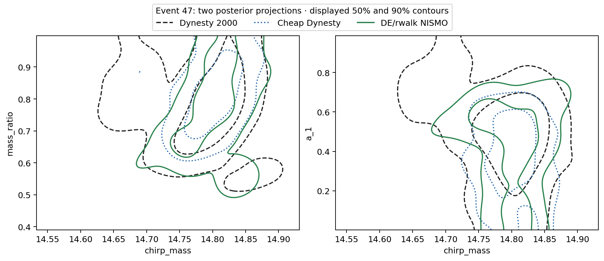
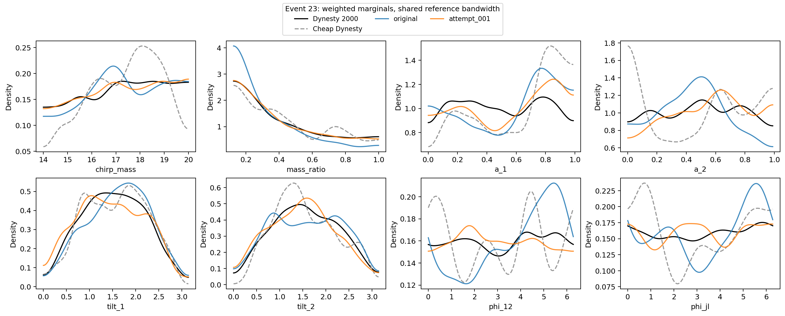
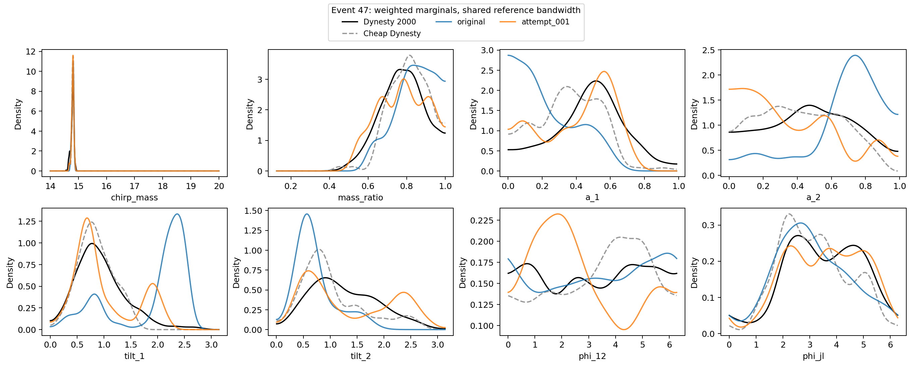

DE/rwalk 80/20 rerun
6 November 2026 · Starting with events 47 and 23 · Source commit 1c0b92a
Prescribed configuration
100 NIS live points; 100,000 independent cached Morph proposals; DE adaptation on; DE/rwalk weights 80/20 and no stretch. No bandwidth flag: the executable demo resolves it to scale 2. Morph trains on every saved cheap posterior row, with the 2,000-live reference held out. No new random-walk pilot is run.
The upstream default permits three bounded recovery retries, explicitly recorded as a heuristic. Numerical stopping, evidence agreement and weight ESS do not certify unbiased posteriors. The main page keeps original results, earlier failed controls and this rerun separate. It shows pending/failed/non-converged outcomes without fabricated NIS values.
First two outcomes
The full 100-event fixed-setting benchmark is now launched, one worker at a time. The main page shows current counts and diagnostic alerts. Target/weight checks passed; posterior-quality alerts are retained rather than being treated as a claim of validated inference.
| Event | Reference lnZ | NISMO ΔlnZ | Mean marginal JSD | Max correlation discrepancy | NIS time | Retries |
|---|---|---|---|---|---|---|
| 47 | -16210.9254 | +0.2618 ± 0.2953 | 0.03896 | 0.475 | 194.3 s | 3 |
| 23 | -16127.4498 | -0.2798 ± 0.1828 | 0.00207 | 0.110 | 29.4 s | 2 |
Event 23's marginal JSD improved from 0.00729 to 0.00207. Event 47 improved from 0.13782 to 0.03896, but remains slightly worse than cheap Dynesty's 0.03570 and retains a correlation alert. These are diagnostic results, not proof that the posterior problem is fixed.
All 2,010 positive-weight points passed independent likelihood/prior/density/weight replays. The reference has finite sampling uncertainty (1,000 retained draws). Evidence errors are reported statistical errors and exclude sampler/proposal/recovery bias. JSD is a mean of eight marginal divergences, not joint 8D JSD; correlation alerts are descriptive rather than calibrated significance tests.
Event 47: joint-shape diagnostics

Event 23: marginal comparison


Event 47: marginal comparison


Audit and reproducibility
An independent event-47 repeat under the final DE/rwalk 100k-pool recipe used sampling seed 20263151 with the same fit seed. It completed in 184.6 seconds with 191,837 likelihood calls; mean marginal JSD versus reference was 0.03940, maximum correlation discrepancy 0.490. Its seed-to-seed mean marginal JSD versus the prescribed primary was 0.05801. This repeat remains separate and does not replace the primary event-47 result.
The earlier 200k-pool, DE/stretch, no-retry controls failed. Two separate upstream-recovery controls improved marginal agreement but still showed seed variation and correlation discrepancies; they remain in the report and were not substituted for the primary results.
Commands, costs, settings, tests and interpretation · Machine-readable validation records